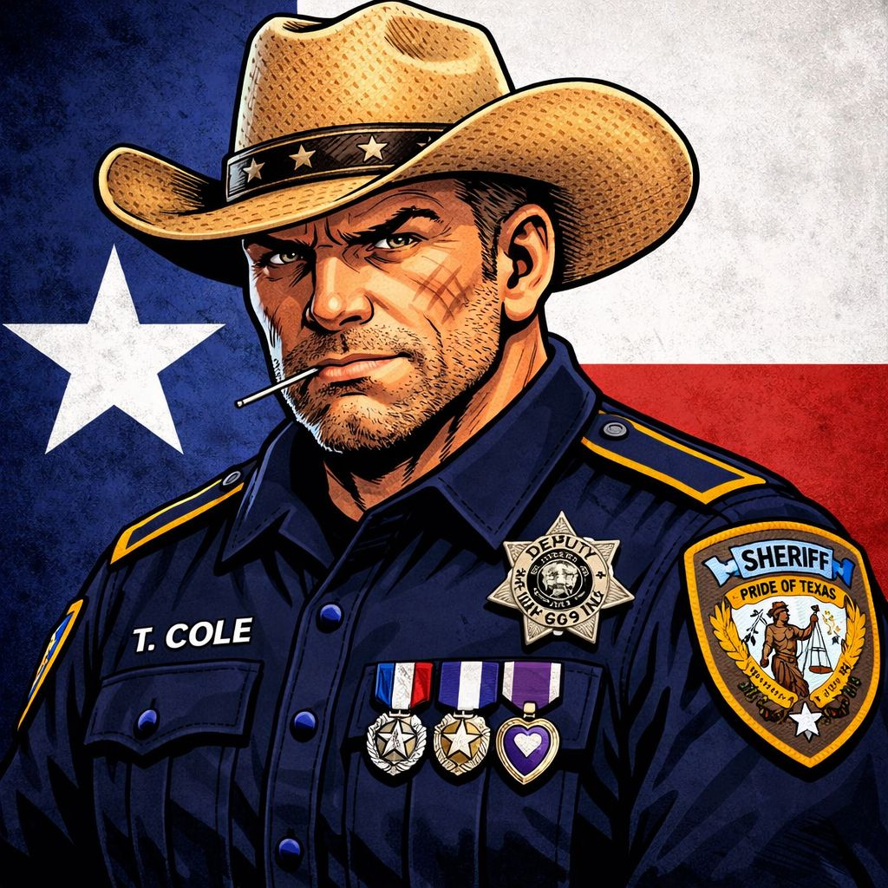
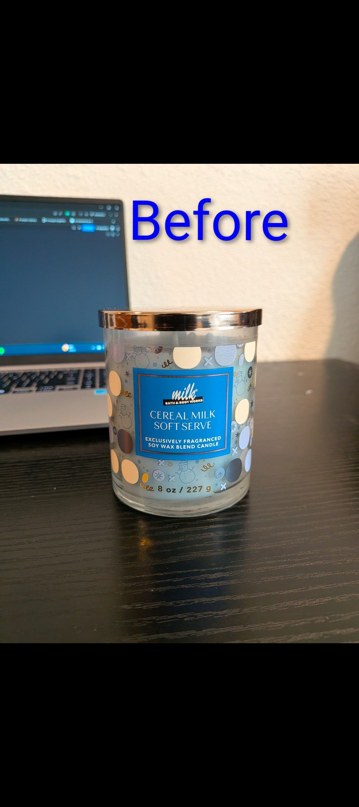
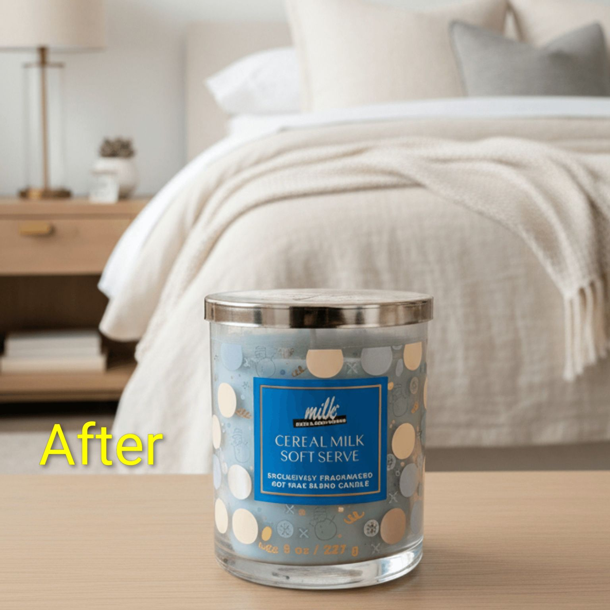
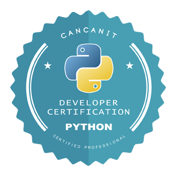
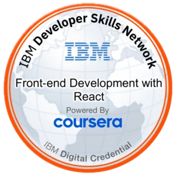
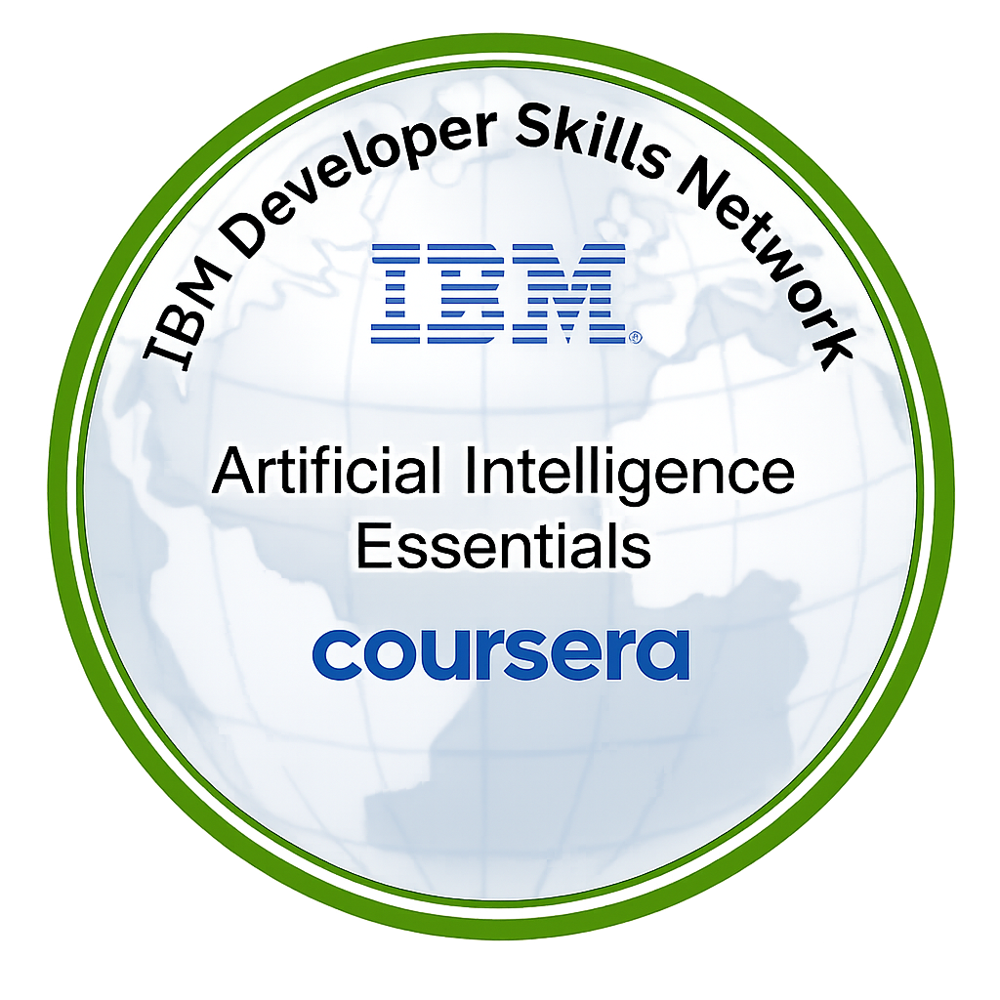

🔍
AI Model Evaluation
Assessing LLM-generated code, verifying factual and technical accuracy, analyzing reasoning errors, finding edge cases, and authoring challenging evaluation tasks.
I'm an AI/ML Engineer focused on evaluating and improving the reliability and reasoning of large language models — assessing LLM-generated code, catching reasoning errors and edge cases, and turning deep software engineering knowledge into high-quality human feedback. That work is grounded in hands-on engineering: I build production AI systems end to end, most recently a RAG pipeline over 50K+ enterprise documents that lifted search relevance 18% and cut query latency 35%.
I evaluate and improve the reliability of language models, and build the production AI systems behind them — from retrieval pipelines and agents to the backend services and MLOps that keep them running.
Assessing LLM-generated code, verifying factual and technical accuracy, analyzing reasoning errors, finding edge cases, and authoring challenging evaluation tasks.
RAG architectures, prompt engineering, semantic search, embeddings, vector databases, tool calling, agents, structured outputs, and hallucination mitigation.
Text classification, information extraction, model inference, anomaly detection, time-series forecasting, and end-to-end ML pipeline development.
FastAPI services, REST APIs, async processing, SQL and vector stores, Docker, AWS/Azure, CI/CD, and production monitoring.
Centered around LLMs and RAG, machine learning and NLP, backend services, vector databases, and the data and infrastructure needed to run AI in production.
 Tailwind
Tailwind FastAPI
FastAPI REST
REST Webhooks
Webhooks RAG
RAG Embeddings
Embeddings pgvector
pgvector Pinecone
Pinecone AWS
AWS GCP
GCP Vercel
Vercel CI/CD
CI/CD Make
Make Zapier
Zapier n8n
n8nBuilt an AI chatbot for Texas law enforcement that helps officers consult on report writing and tighten up narratives. The assistant is intentionally rough around the edges — helpful, blunt, and oddly fun to talk to — while still being practical inside real workflow scenarios.

I’ve been building FotoBox AI for ecommerce sellers who want clean, professional product images without fighting with Photoshop. Users can snap or upload a photo, then use AI for background removal, lifestyle scenes, mockups, and quick listing-ready edits.


I dig into the task, data, and failure modes first — what correct looks like, where models tend to break, and how success will be measured.
I implement the system or evaluation, then test it against real cases — correctness, reasoning, edge cases, latency, and retrieval quality.
I focus on reliability, guardrails, monitoring, documentation, and clear, reproducible results ready for production or review.

Boot.dev certificate covering backend development fundamentals and practical software engineering concepts relevant to production-focused product work.

Coursera and Meta course-style credential entry highlighting React fundamentals, component-based UI development, and modern frontend skills.

Official IBM badge highlighting foundational AI concepts and practical understanding of artificial intelligence essentials.